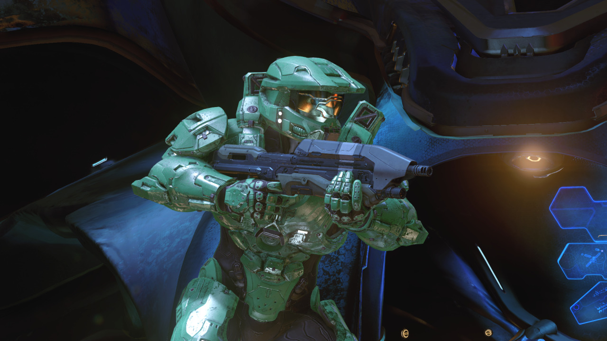

Mark VI
Without question the most famous of all Mjolnir permutations, the GEN2 MARK VI has been completely updated to modern powered assault armor standards.
( Submission for @the-infinitys-armory )
Another awesome submission! Thanks to @arkanhalo for sending this one in.